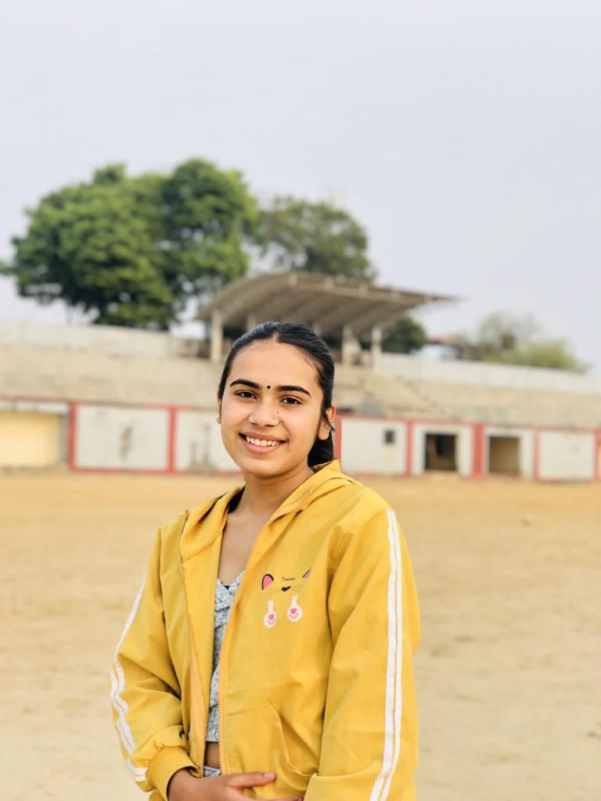

Kritika Sapkota
My Skills
-
Java
C++
Python
JavaScript
ABOUT
Education: Bachelor of Engineering (BE) in Computer Science and Engineering (CSE) I am an aspiring software engineer with a strong foundation in computer science and a passion for building innovative, efficient, and scalable solutions. I enjoy tackling complex challenges and turning ideas into impactful projects.